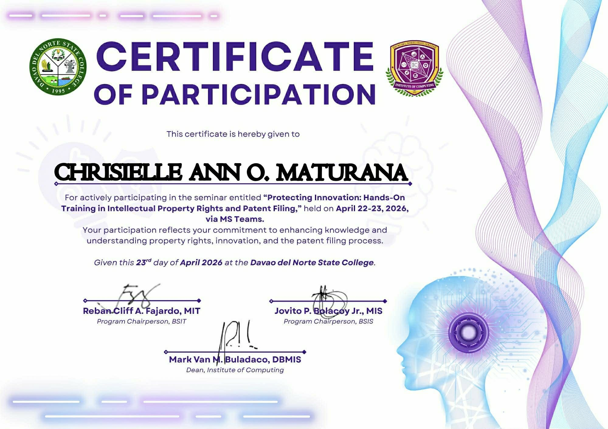
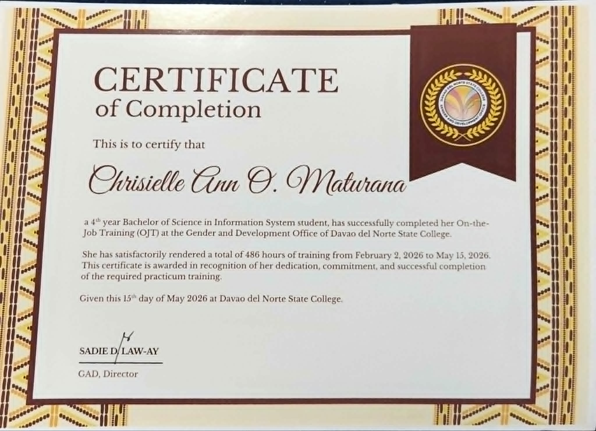
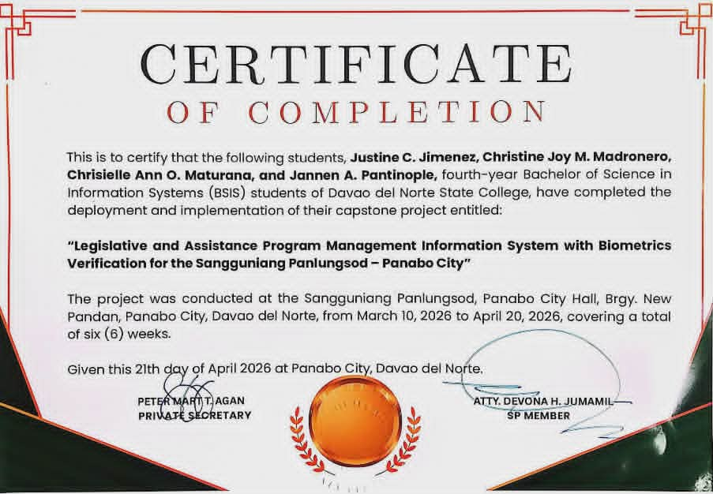
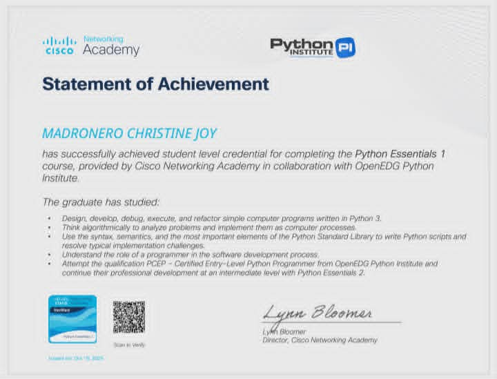
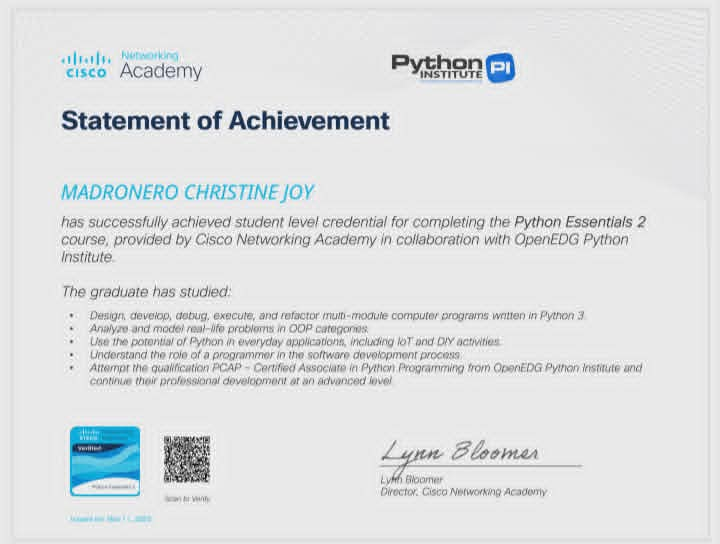

Passionate about information systems, database management, business solutions, and developing innovative technologies that improve efficiency and user experience.
I am a Bachelor of Science in Information Systems (BSIS) student who is eager to learn and grow in the field of technology. I enjoy exploring new concepts, developing my skills, and gaining experience in information systems, database management, and digital solutions.
A web-based information system developed to manage legislative records and assistance program applications for the Sangguniang Panlungsod of Panabo City. The system incorporates biometric verification for secure beneficiary identification, improves record management, streamlines application processing, and supports efficient reporting and monitoring of assistance programs.





-Office/Clerical Assistant
-DSWD KALAHI
-CIDSS (CFW Program) Davao del Norte State College Panabo City
2022-2026
2016-2022
2014-2016